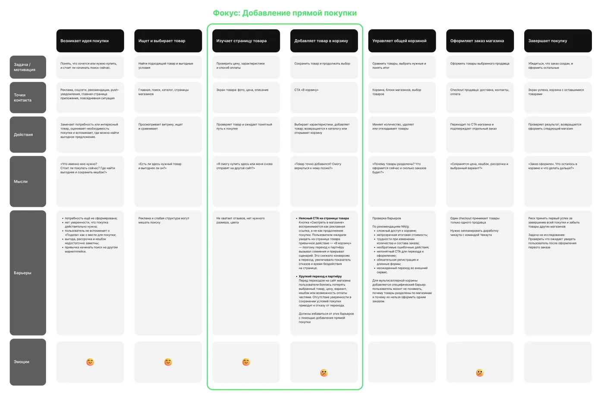
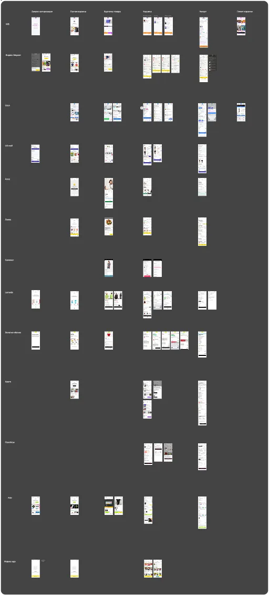

Текстовая колонка задаёт высоту, изображение справа подстраивается через object-fit: cover.
Живой каталог всех компонентов сайта — токены, кнопки, карточки, аккордеоны, таблицы. Все примеры используют настоящие классы из styles.css, поэтому страница всегда отражает актуальное состояние дизайн-системы. Не привязана к навигации сайта — открывайте по прямой ссылке.
Тёмная тема, фон #000000. Один акцент (Rausch) используется по минимуму — hero-кнопка, точка «Open to work», редкие смысловые акценты.
Одна гарнитура на весь сайт — Inter (замена Cereal/Circular).
Обычный текст параграфа — используется во всех блоках кейсов.
Жирный лид-абзац перед списком
Один яркий акцентный CTA на страницу — остальное контурное.
.btn-pill — основной CTA (1 момент на странице)
.case-link — вторичная кнопка (контур)
.badge + .dot — статус-индикатор в навигации
.case-tag — нейтральный тег категории
.status — статус гипотезы в таблице исследований
.power-card — горизонтальный скролл (главная страница)
Быстро нахожу, где пользователь теряется
Думаю не только про макет, но и про результат
.icon-card--success — успех / плюс / метрика
.icon-card--warning — проблема / минус
.icon-card--note — JTBD / заметка
.icon-card--highlight — вывод / воронка результата
.card-grid-2 — плюсы/минусы парами
.subcard-grid — нейтральные карточки без цвета
Товары каждого продавца в отдельной вкладке.
Все товары видны на одном экране.
.stat-grid / .metric — числовые плашки
.quote-block — акцентная цитата
.gallery-note — служебная сноска
Минималистичная карточка: кружок-иконка слева, шеврон справа вместо треугольника.
.disclosure — используется в кейсах (аудитории, исследование)
Женщины 25–45 лет, регулярно покупающие на маркетплейсах.
Уже была хорошо знакома с механикой кешбэка.
.exp-item — используется в разделе «Опыт» на главной
Развиваю новый e-commerce продукт с нуля.
.meta-table — строки label:value (метаданные кейса)
.col-table — 3-колоночное сравнение
| Критерий | Табы | Единый список |
|---|---|---|
| Видимость корзины | Виден только активный таб | Все товары видны сразу |
.data-table — таблица с бейджами статуса
| № | Гипотеза | Результат |
|---|---|---|
| H4 | Пользователи правильно понимают итоговую стоимость | Подтверждена |
.figure — стандартный кадр (14px радиус)

.side-figure — текст + картинка по высоте текста
Текстовая колонка задаёт высоту, изображение справа подстраивается через object-fit: cover.
